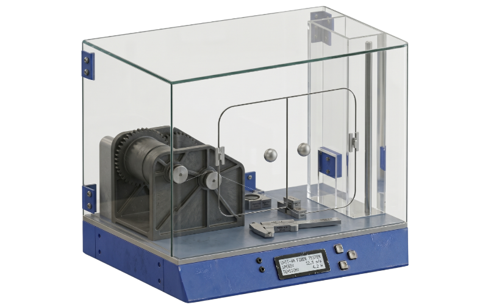
ECO - 0 Spire Makinesi
Atık PET şişelerden geri dönüştürülmüş 3D yazıcı filamenti üreten masaüstü makine. Sürdürülebilirlik ve fonksiyonelliği bir araya getirir.
Detayları İncele →Endüstriyel Tasarım Mühendisi
Alanında saygın bir teknoloji firmasında Tasarım Mühendisi olarak görev aldım. SolidWorks ile imalata uygun mekanik parçalar tasarladım ve firmanın ürün geliştirme projesinde aktif rol aldım.
Küçüklüğümden beri tasarım ve teknolojiye olan ilgim nedeniyle tercih ettiğim lisans eğitimimi tamamladım.
Aday mühendislik sürecim boyunca AS9100 standartları doğrultusunda KYS dokümantasyonu hazırlayarak kalite yönetim süreçlerine destek oldum.
Aday mühendislik sürecim boyunca ilgili standartlar doğrultusunda konsept ürün tasarımları geliştirdim; mobilya sektörünün tasarım süreçleri hakkında deneyim kazandım.
Stajım boyunca AutoCAD ile teknik resim hazırlama, SolidWorks ile 3B parça modelleme, KeyShot ile ürün görselleştirme ve Excel tabanlı dokümantasyon çalışmalarını yürüttüm.
Bu stajım SolidWorks ile parça tasarımı yaparak kendimi geliştirmemi, medikal sektörünü yakından tanımamı sağladı.
Staj yaptığım firmada Saha Mühendisliği Stajyeri pozisyonunda görev alarak üretim tezgahlarında görev alma fırsatım oldu.
Seçili çalışmalar ve proje arşivi

Atık PET şişelerden geri dönüştürülmüş 3D yazıcı filamenti üreten masaüstü makine. Sürdürülebilirlik ve fonksiyonelliği bir araya getirir.
Detayları İncele →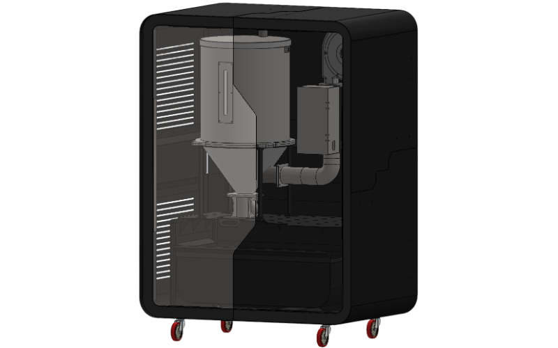
Plastik granülleri işleme öncesinde kurutarak nem kaynaklı üretim hatalarını önler.
Detayları İncele →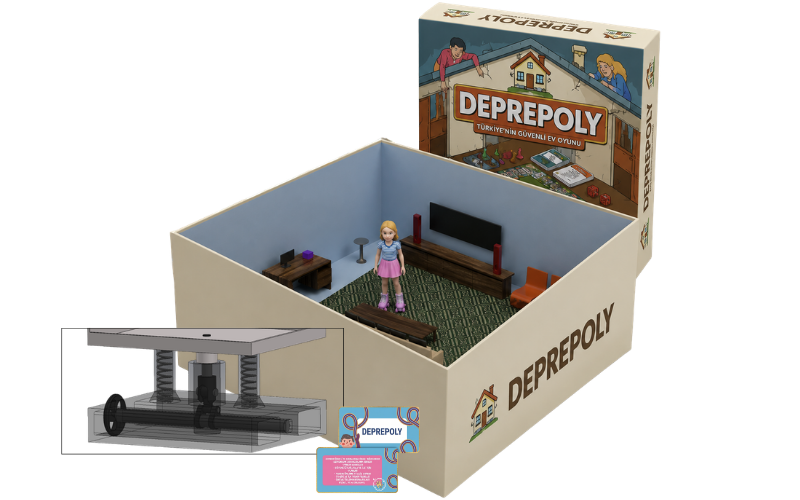
Deprem güvenliği eğitimini çocuklar için erişilebilir ve akılda kalıcı hâle getirmek amacıyla eğitsel bir oyun geliştirilmiştir.
Detayları İncele →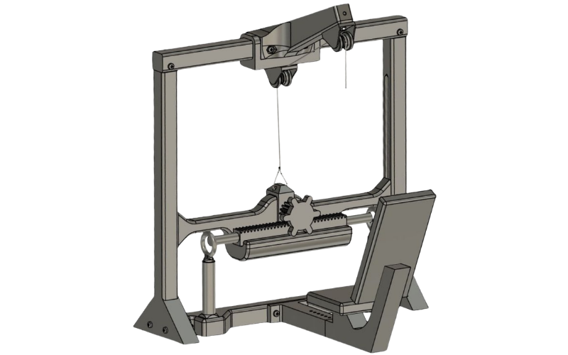
Ayarlanabilir mekanik direnç sistemiyle farklı kullanıcı seviyelerine uyum sağlayan, kompakt ve ergonomik bir ev tipi kol egzersiz istasyonudur.
Detayları İncele →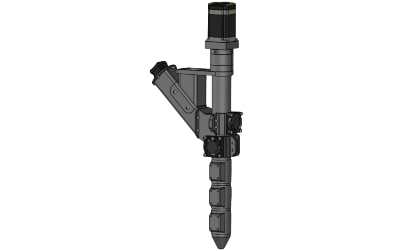
Granül hammaddenin doğrudan eritilip ekstrüde edilmesini sağlayarak üretim maliyetlerini azaltan bir sistem geliştirilmiştir.
Detayları İncele →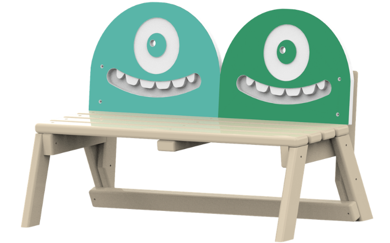
Karakter tasarımını kent mobilyasıyla buluşturarak kullanıcı etkileşimini artıran konsept bir bank geliştirilmiştir.
Detayları İncele →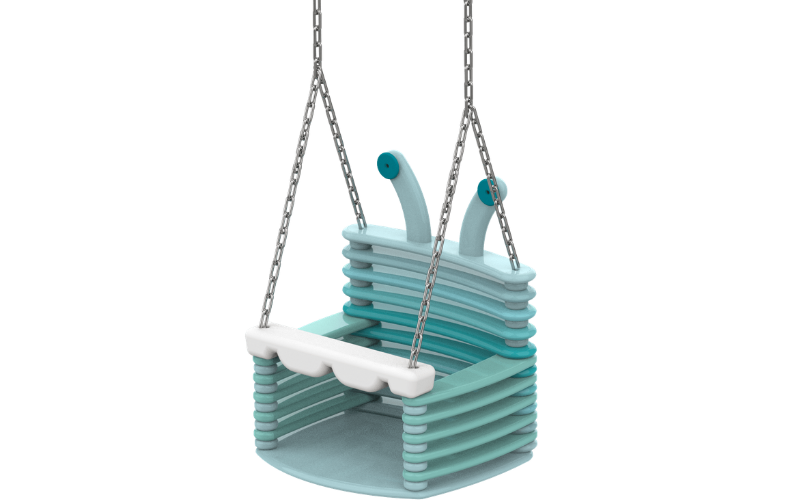
Dinamik formu ve karakter detaylarıyla oyun alanlarına eğlenceli bir kimlik kazandıran konsept bir salıncak oluşturulmuştur.
Detayları İncele →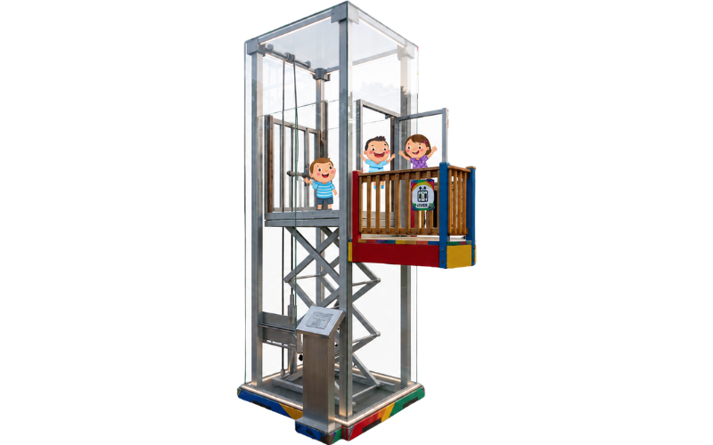
Pascal prensibine dayalı hidrolik sistem ile mekanik hareketi birleştiren, çocuklara temel mühendislik prensiplerini deneyimleme fırsatı sunan bir asansör tasarlanmıştır.
Detayları İncele →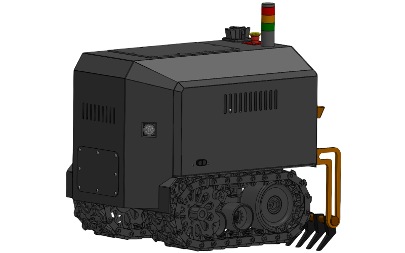
Hasat sonrası toprağı otonom olarak işleyerek havalandıran ve bir sonraki ekim sürecine hazırlayan bir ripper tasarlanmıştır.
Detayları İncele →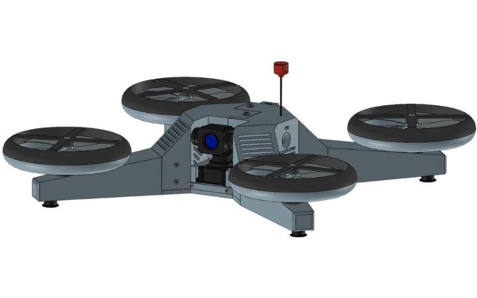
Otonom uçuş kabiliyetiyle geniş alanlarda keşif, tehlike tespiti ve hedef takibi yapabilen akıllı bir drone geliştirilmiştir.
Detayları İncele →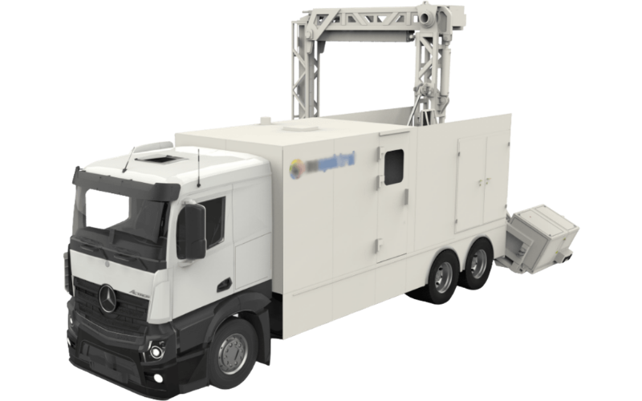
Malzeme, ışık ve kamera kompozisyonu optimize edilerek ürünlerin gerçekçi sunum görselleri hazırlanmıştır.
Detayları İncele →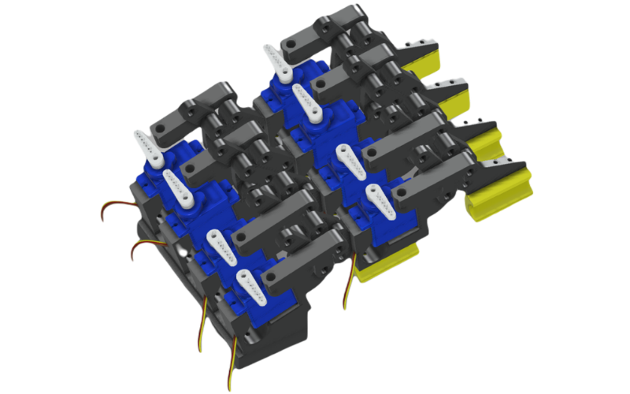
El fonksiyonunu kaybetmiş bireylerin temel kavrama ve tutma hareketlerini gerçekleştirebilmesi amacıyla koldan takılabilen robotik bir el sistemi tasarlanmıştır.
Detayları İncele →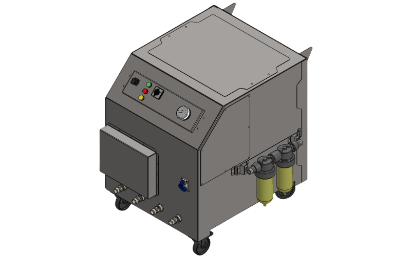
Sahada ve endüstriyel çalışma ortamlarında ihtiyaç duyulan sıcak suyu güvenli ve taşınabilir şekilde sağlayan monoblok yapıda bir su ısıtıcısı tasarlanmıştır.
Detayları İncele →
Üretim kalitesini ve proses tutarlılığını artırmak amacıyla katkı maddelerinin hassas dozajlanmasını sağlayan bir sistem tasarlanmıştır.
Detayları İncele →Hobi Projelerim